South America · Brazil · Paraná
Iguazu Falls, Brazilian side, January 2018
This chapter starts with one day in Florianópolis, on January 24, and then goes to Foz do Iguaçu and the Brazilian side of Iguazu Falls on January 26. I have two photos from Florianópolis and 47 photos from the falls day, and I use fewer than half of them, because many are the same view. The Argentine side, which I visited on January 28, is not in this chapter.
My conclusion up front: the Brazilian side is where you see the whole width of the falls, and the park has wild animals that come to you, so keep your distance. I did not buy the ticket in advance, as far as I remember, and I do not remember what I paid. The written sources I found say that the Brazilian ticket for a foreign visitor is capped at R$134 in 2026, and that the Argentine side costs about twice as much, so the price is a reason to start on the Brazilian side.
About the times: the file names of my photos show my phone's clock. On January 28, Google Photos showed a time one hour later than the file name for the photo I checked, and for Florianópolis on January 24 two hours later. I did not check each photo on January 26, so the times in this chapter are the phone's clock.
- Bus from Florianópolis: 7 direct buses a day, about 15 hours, from about R$278 to R$360 on the weeks I checked. These prices change.
- Tickets, Brazilian side: a May 2026 article gives a ceiling of R$134 for foreign visitors. The park limits visitors per day, so plan ahead. I found no official price page, so check the park's site.
- Coatis: a 2016 report recorded 272 incidents in 2015, with visitors scratched or bitten when they looked for food. I did not find a current official rule.
- The Marco das Três Fronteiras: the two guides I found disagree on the bus line number, so I do not give one.
- Crossing to Puerto Iguazú: buses cross every 30 to 60 minutes according to a 2026 guide, and the trip takes 45 to 60 minutes with the border stops. The sources disagree on details, and I found no official page with the current rules.
The sources and the details are in the boxes below the story. These things change, so check before you go.
On the way: a day in Florianópolis
I think I flew to Florianópolis, probably from Salvador, because my last photo before it is the ferry in Salvador on January 23. I do not have a ticket or a record of the flight, and I did not find a source for the flights. I stayed one day, maybe two, in a hostel that I think was called The Magic Monkey. The only listing I found for a hostel with that name is in Lagoa da Conceição, on Rua José Henrique Veras on a booking site, but the page has no date and I cannot say that it is the place where I slept.
I have two photos, both at 16:47 on January 24. Google Photos places them at a lagoon in the Lagoa da Conceição area, which fits the hostel listing. I walked there. I do not remember how long, what I ate, or if I went to a beach, and I have no photo from January 25.
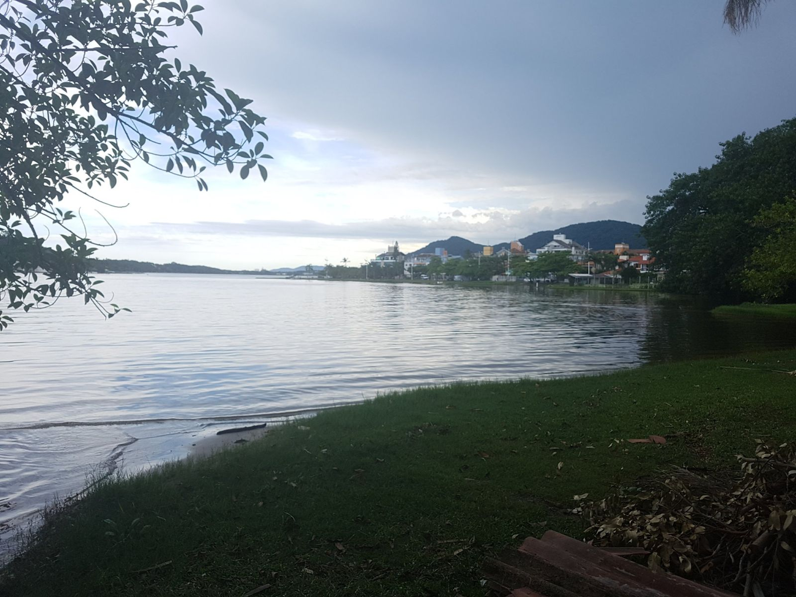
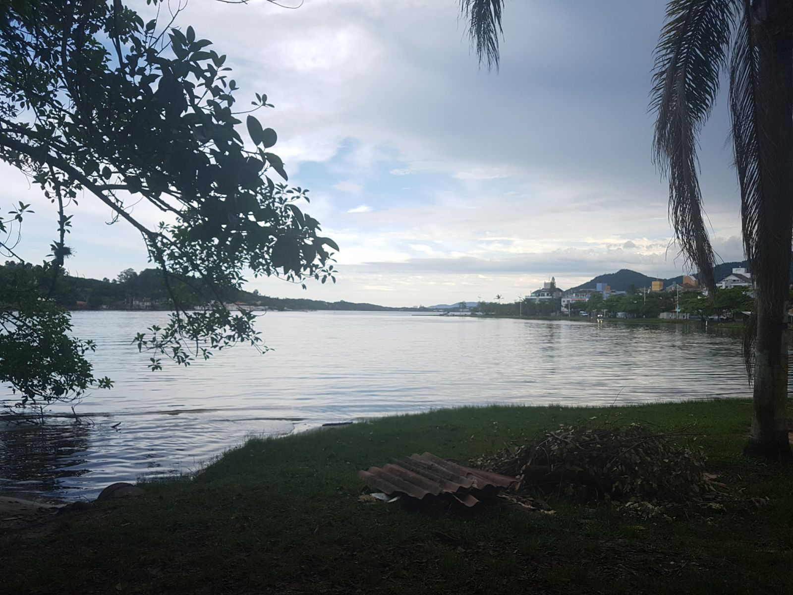
The bus to Foz do Iguaçu
I think I went by bus. I do not remember the company, the price, the day or the hours. The next photos are from January 26 at noon in the park, so I arrived in Foz do Iguaçu on January 25 or early on the 26th. I do not remember where I slept in Foz. I did not write the name of the hostel anywhere.
What I found: the Omio page for the route says that 7 buses a day run direct, that the average trip takes 15 hours 20 minutes, that the cheapest ticket is R$278 and the average is R$360, with the fastest trip at 14 hours 55 minutes (omio.com.br). The Buser page for the same route shows a bus from the Florianópolis bus station at 15:01 that arrives at the Foz do Iguaçu international bus station at 06:45 the next morning, with prices from R$285.19 (buser.com.br).
What I did not find: the prices and the schedule of January 2018. These are prices of the weeks when I checked, and they change. I also did not find which company I used.
The Brazilian side of the falls: January 26
I went in on Friday, January 26. My first photos in the park are of coatis, at 12:09 by the phone's clock, and my last photo from the trails is at 14:52, so I was in the park for at least 2 hours 43 minutes. I do not remember how I got to the park, the time that I came in, or how I paid. As far as I remember I did not buy the ticket in advance.
What I found: a newspaper article from May 2026 says that the ticket of the Brazilian side has a ceiling of R$134 for foreign visitors, and that in the same article's example the Argentine side cost almost twice as much (gazetasp.com.br). A travel blog says the park controls the number of visitors per day, advises planning ahead, and says that with an advance reservation you show a QR code at the gate; it also lists the 2026 parking fee at R$63.80 (fuiserviajante.com). A Melhores Destinos article of November 2022 says that after a new operator took over, the ticket price is adjusted every year by the inflation index IPCA (melhoresdestinos.com.br).
What I did not find: what I paid in 2018, the exact 2026 price list by category, and whether in 2018 the park limited the daily number of visitors. I did not find an official price page that I could open from here, so check the park's own site before you go.
The coatis, at 12:09
The first thing I photographed in the park was a group of coatis on a paved area next to a viewing point, around small packages on the ground. They are about the size of a small dog, with long ringed tails and a pointed nose. I do not know what was in the packages, and I did not see if someone fed them. The photos show a few pairs of legs of visitors at the top of the frame, which I left in.
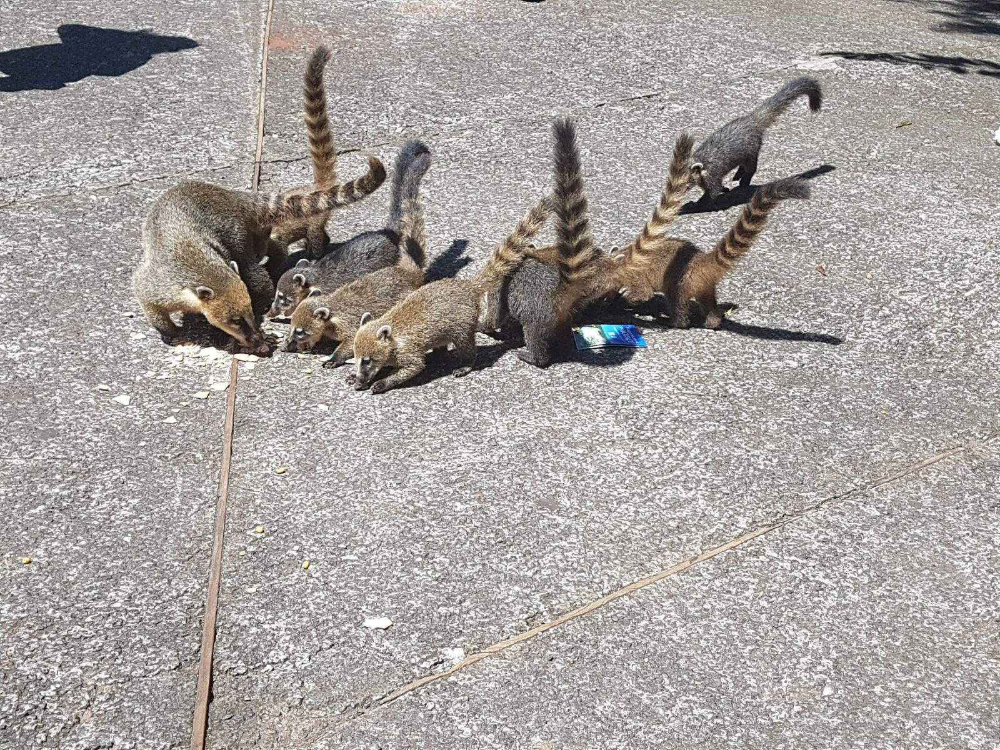
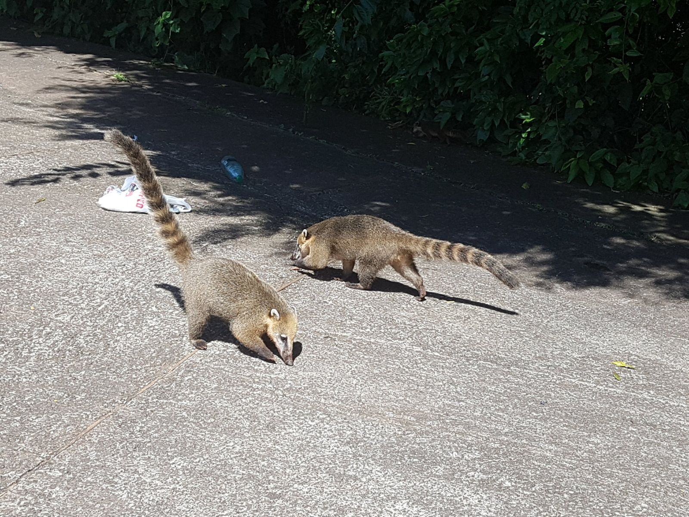
What I found: a local radio report from January 14, 2016 says that the park recorded 272 incidents with coatis in 2015, that visitors were scratched or bitten when they looked for food, and that the park put up signs at the main access points that tell visitors to avoid contact (radioculturafoz.com.br).
What I did not find: a current official rule, with a fine, against feeding coatis. A recent article I found, from the Olhar Digital site, says that feeding them harms the animals' balance in the park, but it has no date. So I do not state a rule, I only say what the 2016 report says.
The first views, 12:11 to 12:24
After the coatis, the views come one after the other. In the first one the falls are far away on the other side of a brown river, and a boat is crossing it. In the second, the same view is framed through big leaves. I took many photos of the same view, and these are the two that I chose.
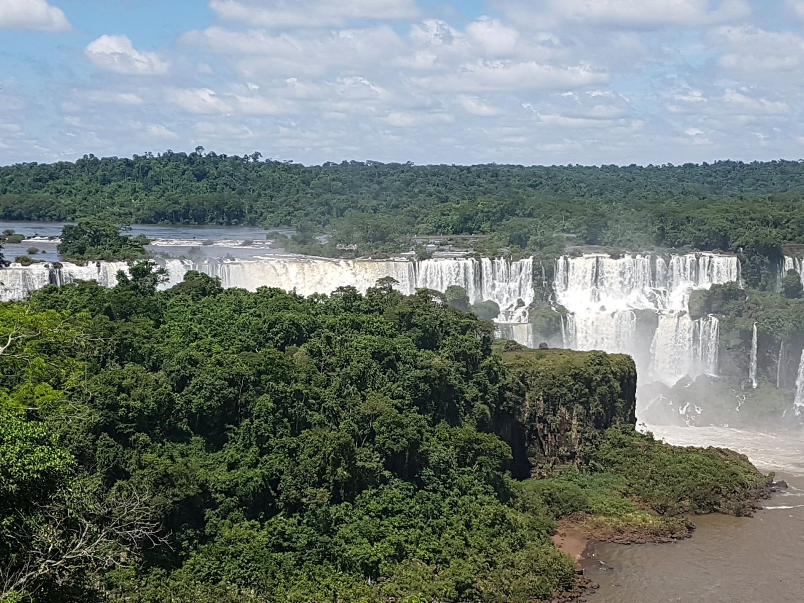
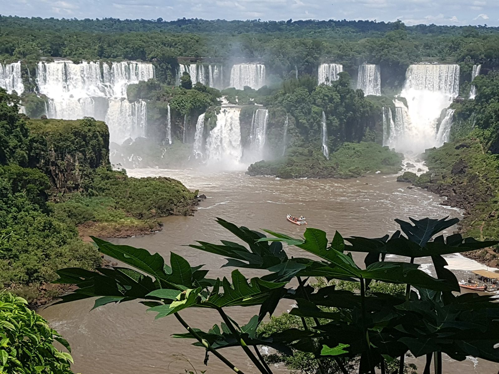
A lizard and a spider, 12:26
On the path, at 12:26, I saw a large lizard with a black-and-white striped body walking on the ground, and a minute later, a big hairy spider in the leaves at the side of the path. I think the lizard is a tegu, and the spider a tarantula, but I do not know the species of either. I do not remember where on the trail they were.
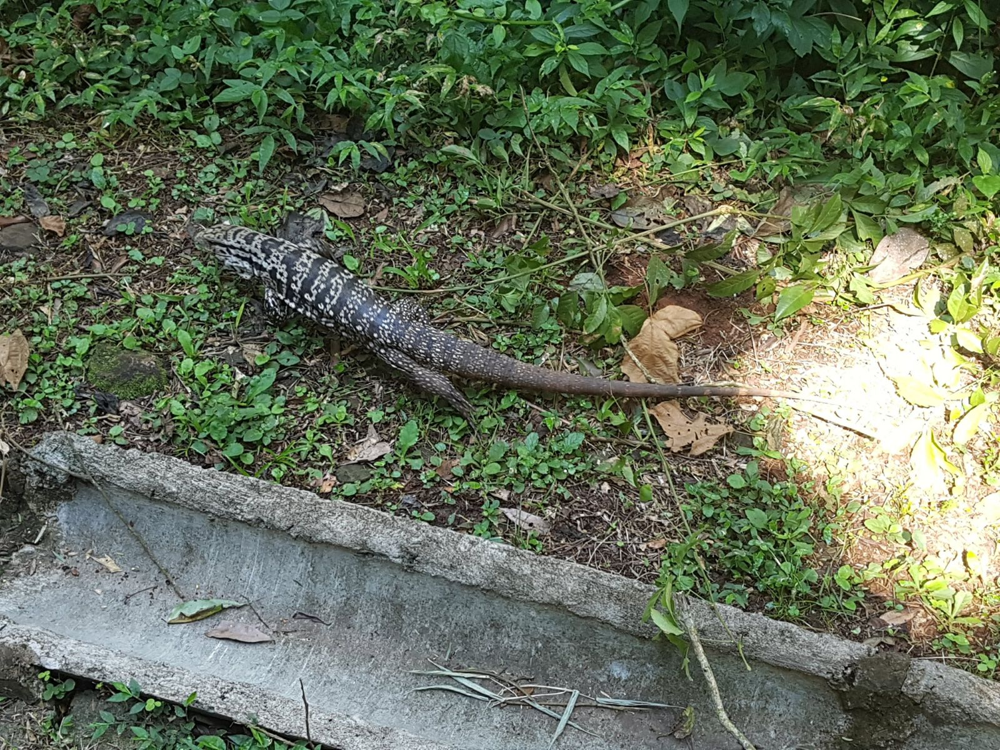
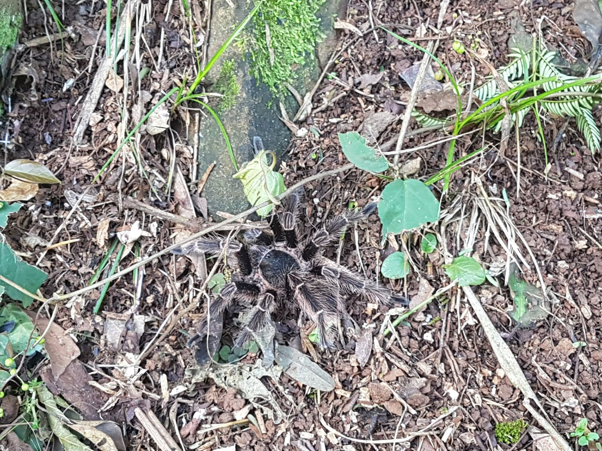
Closer to the falls, 12:34 to 13:00
Further along, the views get closer. At 12:34, I framed the falls through the trees, with a cliff in the middle of the view. At 13:00 there is a big drop at the left, and at the right edge of the photo you can see a walkway above the river. I do not remember the names of the viewpoints, or the number of platforms, and I did not take photos of the signs.
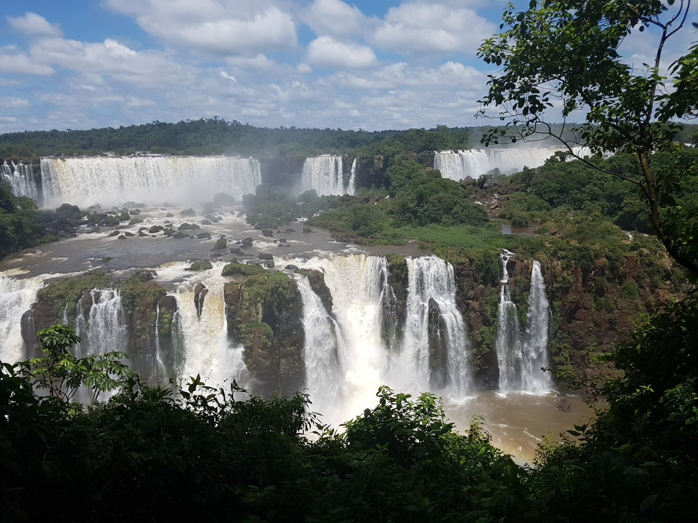
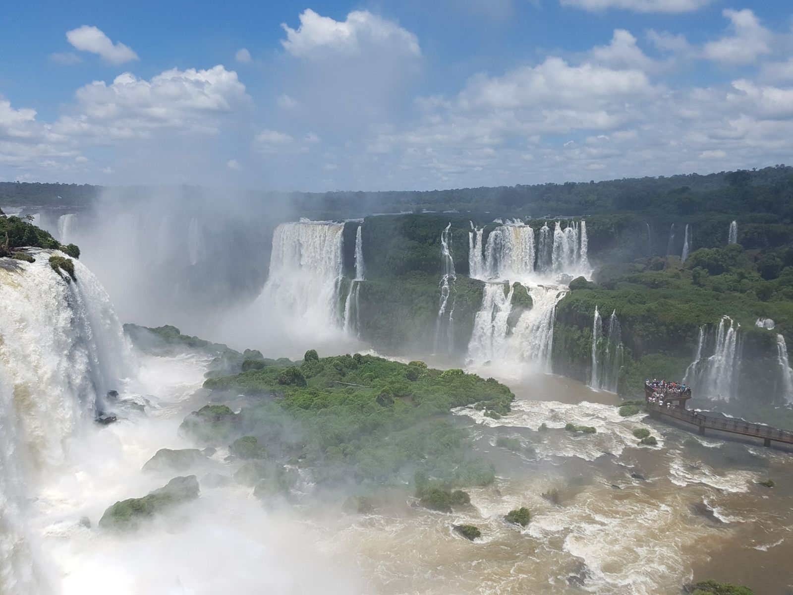
The walkway over the river, 14:48 to 14:52
The last photos from the trails are from 14:48 and 14:52, at the end of a walkway that goes out over the river, right at the edge of the falls. At 14:48 there is a rainbow in the spray, and at 14:52 the water goes over the edge a few steps in front of me. I think this is the walkway that ends at the Devil's Throat (Garganta do Diabo), and I know it only because of the shape of the falls in these photos, because I do not remember the name from the day.
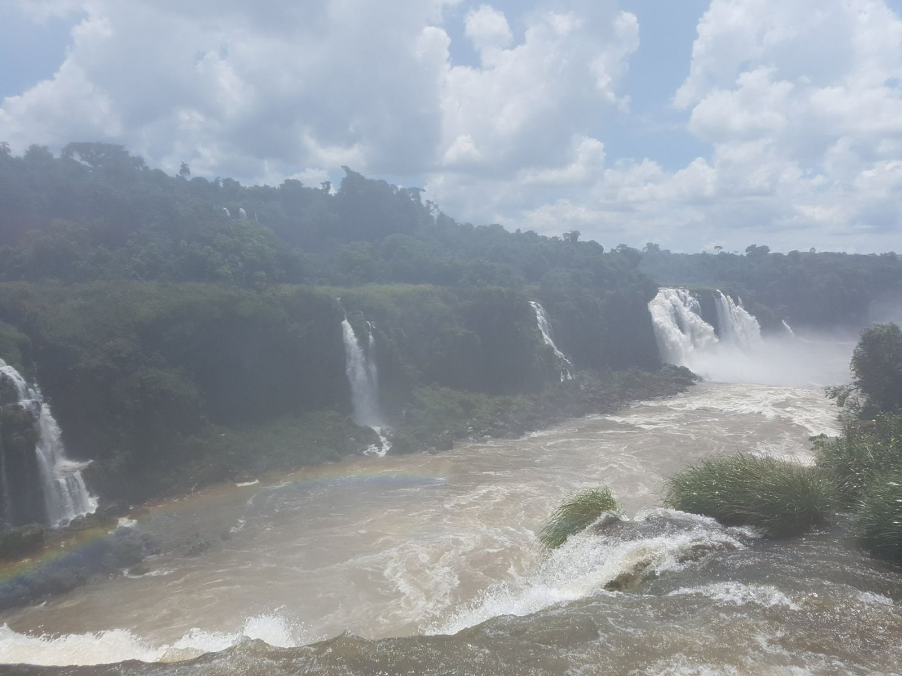
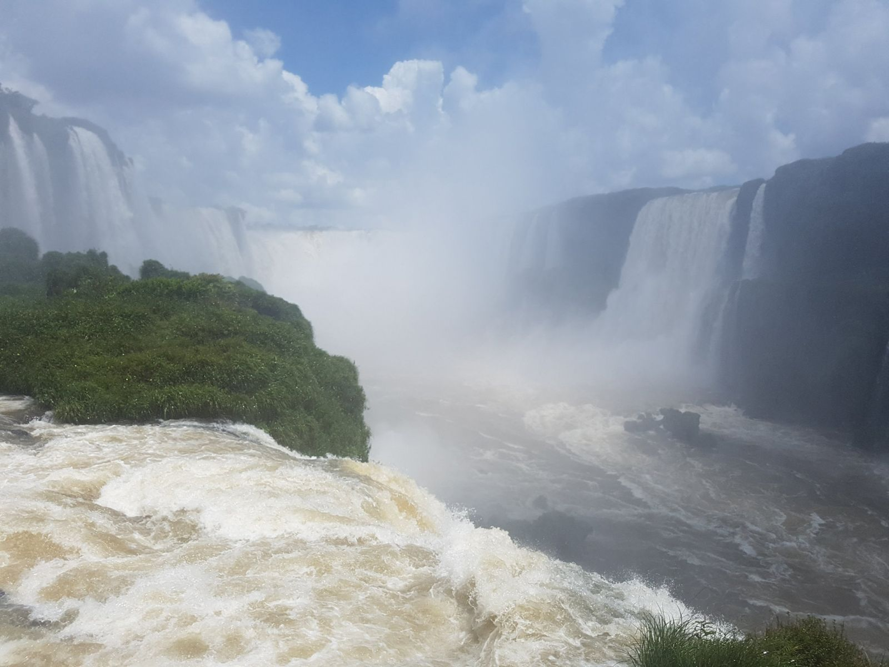
What I found: a tour operator's page for the Brazilian side says that the visit follows the Trilha das Cataratas, the falls trail, and enters the Devil's Throat walkway to see the waterfall from close (headout.com).
What I did not find: the opening hours or the walking time of 2018, and a source on how I got from the trail to the walkway, whether on foot or by the park's bus. I do not remember it.
The evening in Foz do Iguaçu
After the park, I have a photo at 15:44, in front of a billboard of the Marco das Três Fronteiras, with a sign that points to Argentina on the left, to Paraguay on the right, and to Brazil. The billboard says Foz do Iguaçu. It is the place where the Iguaçu and Paraná rivers meet at the border of the three countries. I do not remember how I got there from the park, on foot or by bus, or if I went in, and the sources I found do not agree on which bus line goes there.
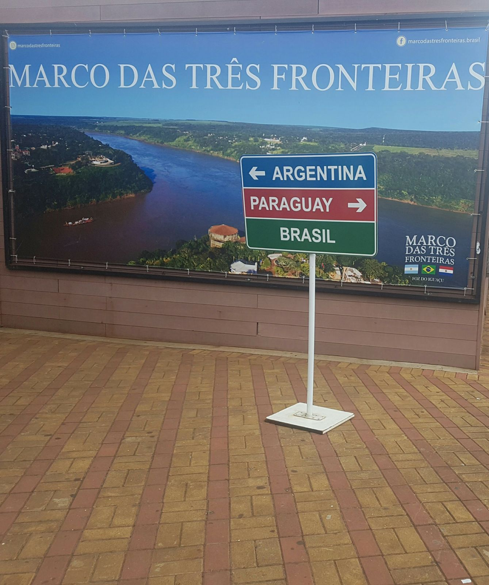
What I found: a guide of Grupo Dicas from 2026 says that the Marco is in the Jardim Eldorado area, about 6 km from the centre of Foz, that city bus line 110 from the central bus terminal goes straight to it, and that the complex opens in general from Tuesday to Sunday between 13:30 and 21:00 (grupodicas.com). Another guide, Viaje na Viagem, says that the bus to the Marco is line 103 (viajenaviagem.com). They disagree on the line number, so I do not give one.
What I did not find: the line and the hours of 2018, and how much it cost then. January 26, 2018 was a Friday, so it would have been open in the days the 2026 guide gives, but I do not know the hours of that year.
At 19:21 I photographed a street in Foz, with a sign over the road that points to the Tourism Secretary and the Marco das 3 Fronteiras, the zoo, the city hall, the convention centre, the airport, the falls, and, in green, to Argentina. I do not know which street it is, and I do not remember what I was doing there.
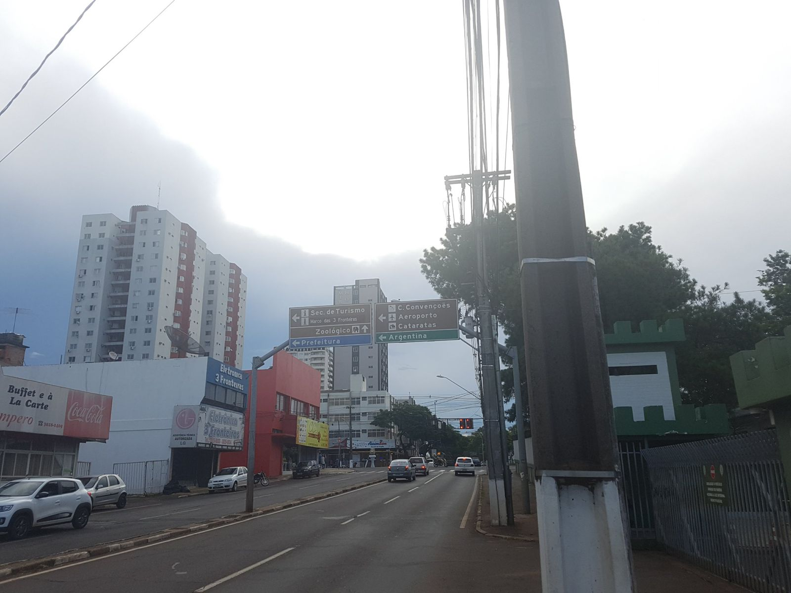
The last three photos of the day are from 20:01, taken through a window of a moving vehicle, on a bridge with a low barrier painted in yellow and green, over a river at sunset. Google Photos places them in Foz do Iguaçu, on the Brazilian side, near the river. I think this was my crossing to Argentina, because the only bridge between Foz and Puerto Iguazú is the Tancredo Neves bridge, and the next photos I have of the falls are from the Argentine side on January 28. But I did not write this down, I do not remember the crossing itself, and I cannot prove that this photo is that bridge. I show one of them.
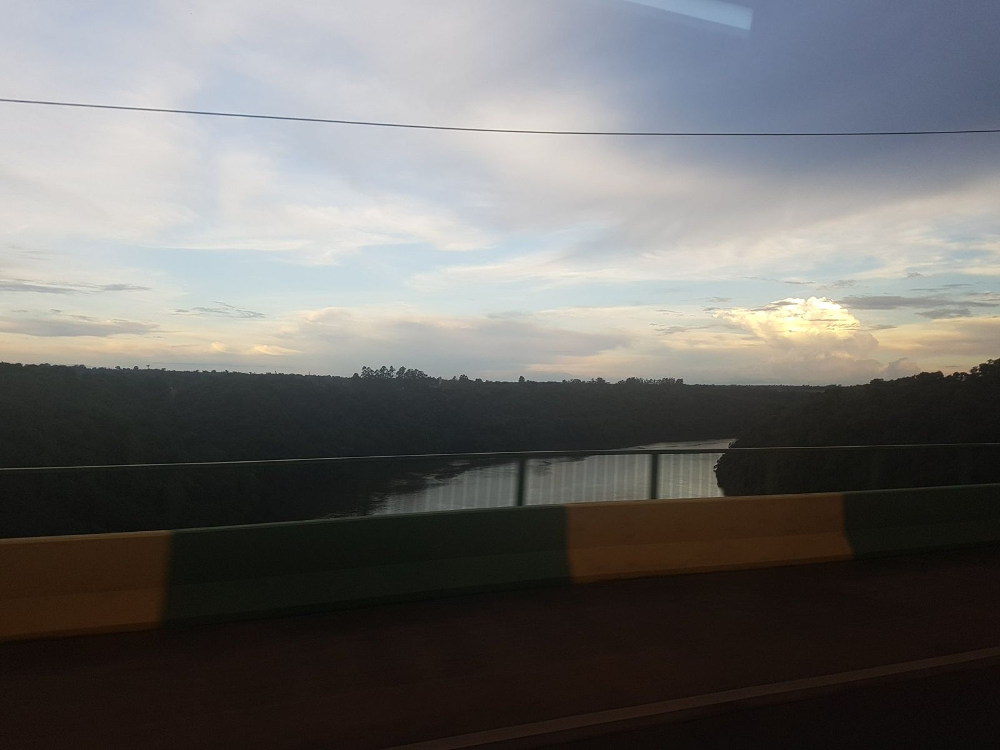
What I found: Bookaway says that the trip needs a border crossing at the Tancredo Neves bridge, and that bus passengers get off at the Brazilian and at the Argentine border checks. Viaje na Viagem says that the company Río Uruguay runs a bus every hour between Puerto Iguazú and Foz, for R$20 (July 2022). A 2026 guide says that local buses cross every 30 to 60 minutes in the daytime, for $5 to $8, and that the whole trip takes 45 to 60 minutes including the border stops. A route guide says that all routes stop at the border control on the bridge.
What I did not find: which way I crossed in January 2018, and the price then. The sources disagree on the details: one travel site says that no public buses cross the bridge, and another that you can walk or cycle over it, while the bus sources above say that buses do cross. I do not know which of these was true in 2018, so I do not say how to cross on foot. I did not find an official page of either country with the current rules for tourists on this crossing.
What I do not remember
I do not remember how I got from Salvador to Florianópolis, the hostel there, the day I left, the bus company, the price, or where I slept in Foz do Iguaçu. I do not remember how I crossed to Argentina, on which day (the evening of January 26 or January 27), what it cost, or how long the border took. I do not remember what I paid at the park, how I got from the city to the park or back, how long I stayed, or what I ate. I do not remember where the coatis, the lizard and the spider were on the trail, if someone fed the coatis, or which walkway I stood on at the end. I do not remember what I did on January 25 or January 27. I have no photos from these two days except screenshots of maps on January 27, which I do not show.